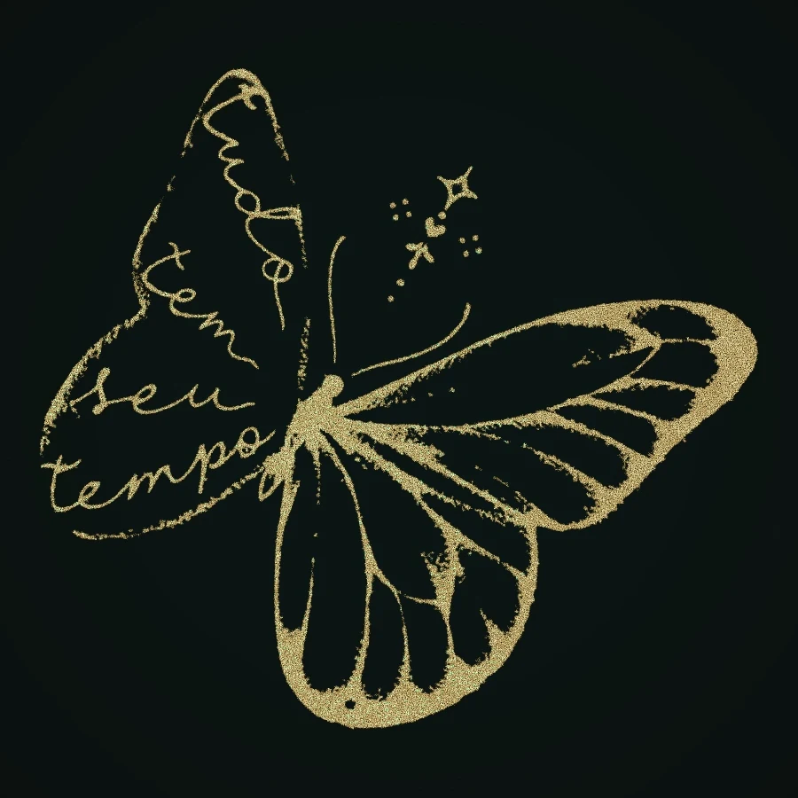
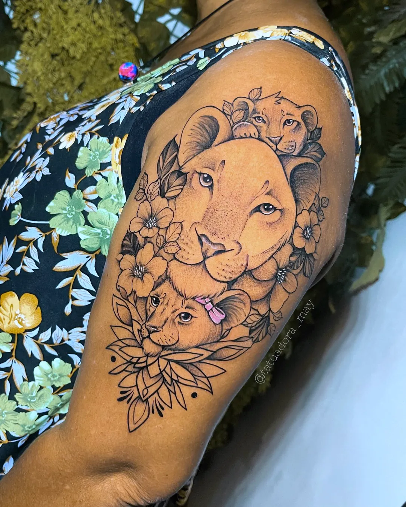
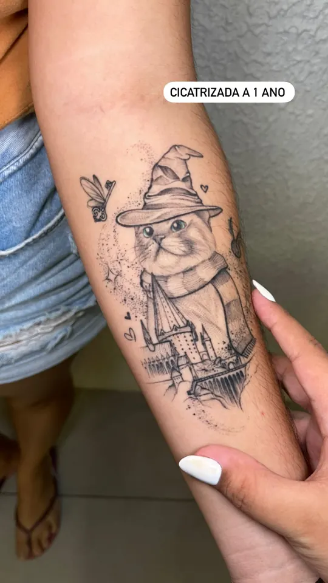
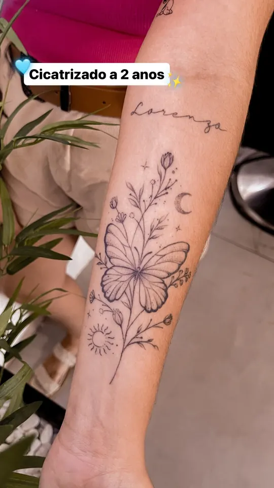
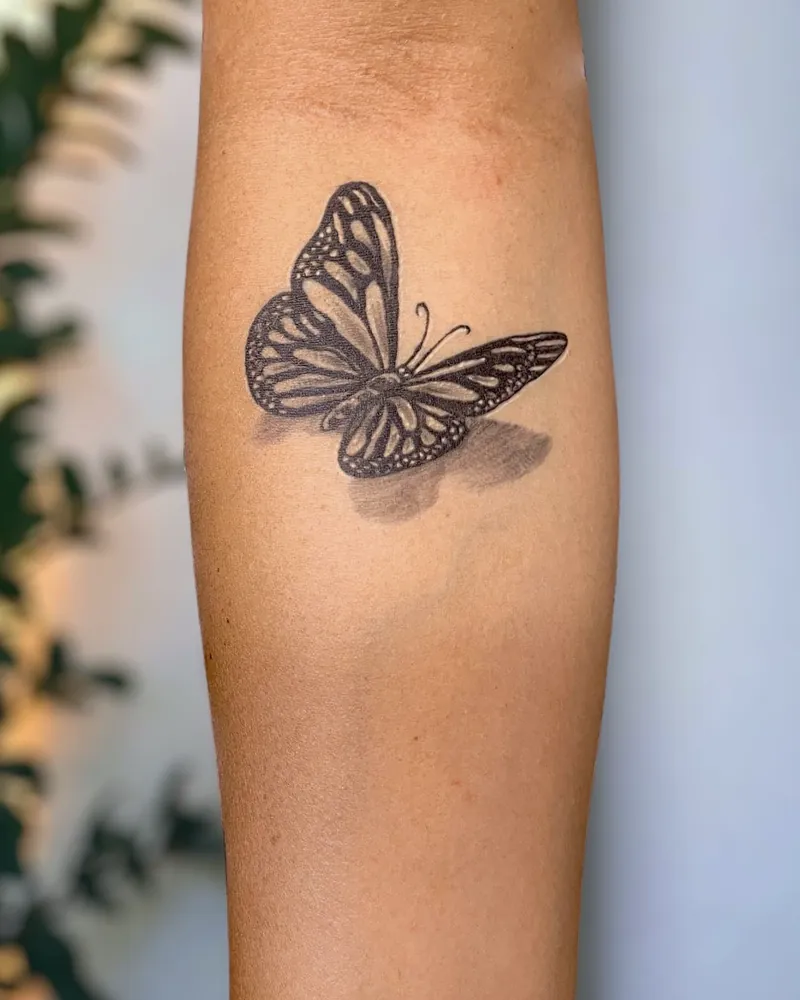
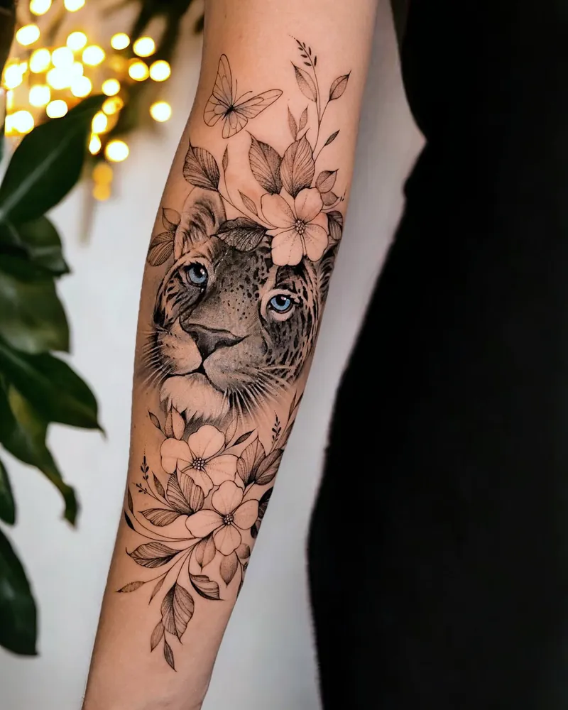

A ideia
Você conta a história. A May desenha com antecedência e mostra o esboço para você opinar.
Fine line, floral a mão livre e homenagens, desenhados para você e para a sua pele.
Pedir orçamentosaudadeTatuagem real: homenagem ao pai

Atendimento privado no Duo Ink Tattoo Studio, em Feira de Santana, BA. Apenas com agendamento.
Aqui as tatuagens não estão separadas por estilo. Estão pelo sentimento que cada uma carrega.
Desde 2017 ela transforma o que as pessoas sentem em traço fino. Em 2023 foi premiada na categoria fine line. Hoje divide o Duo Ink Tattoo Studio com o companheiro: um casal apaixonado pela arte, com atendimento privado e exclusivo.
Em 2025 nasceu a Luísa Violeta, e todo pedido de homenagem ganhou outro peso: "Hoje quando eu faço uma tatuagem em homenagem a um filho, eu sei o quanto de amor, de entrega, de espera, de ansiedade estão contidos."
Profundidade, técnica, tamanho e agulha mudam conforme a sua pele, e até conforme a região do corpo. Tatuagem não é só pegar a máquina e riscar.
Equilíbrio ideal. Segura bem o pigmento e cicatriza de forma mais estável.
Mais sebo na pele. Pode haver leve expansão do traço com o tempo.
Mais difícil de pigmentar. Pede mais hidratação no pós.
Pode reagir com mais inflamação. Requer técnica e profundidade controladas.

Depois de cicatrizar, a melanina fica como uma película sobre a arte. Por isso o desenho muda. A delicadeza não depende da agulha fina: "é o conjunto da obra que dá essa impressão".
Foto de tatuagem recém-feita qualquer um posta. Aqui estão as que já passaram pelo tempo.


Para trabalhar com cobertura é preciso agradar o cliente duas vezes: esconder o que incomoda e entregar uma arte nova de verdade.


A tatuagem antiga não era o estilo que ela queria. A resposta foi uma arte nova, em traços finos.
Não é apenas uma cobertura, é uma nova história.
"É visível que seu trabalho extrapola as questões do dinheiro, você realmente tem amor pelo que faz."
Alessandra
"Eu tô simplesmente apaixonada, mais uma vez você superou minhas expectativas."
Ellen
"Tatuagem perfeita, traço fino e seu atendimento impecável, voltarei mais vezes."
Ediane
Sua tatuagem pode alimentar outra família, e ainda vem acompanhada de outra tatuagem, por conta da May.
A minimalista é em traços pretos, desenho ou escrita. Não vale colorido nem realismo e não é transferível.
Quero participarPreencha e sua mensagem abre pronta no WhatsApp da May. As respostas seguem a ordem de chegada.
R$ 250. O orçamento final depende do tamanho, do lugar e dos detalhes da arte.
Depende muito da arte. Um raminho costuma levar de 3h a 3h30. Peças grandes podem pedir mais de um dia.
Sim. As artes são feitas com antecedência e você vê o esboço para opinar.
Não. O atendimento é privado e apenas com agendamento.
Hidrate bem a pele nos dias anteriores. A May explica os cuidados específicos para o seu caso quando confirmar a data.